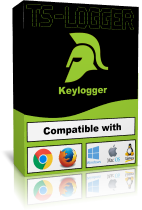

YTMP3 est un application pour télécharger des musique de youtube en .mp3. Elle est très simple a utiliser, il suffit d'ouvrir le fichier nommer "start.vbs" et de coller l'url de la vidéo YT que vous voulez télécharger.
TS-Keylogger est une extention pour Google Chrome. Le keylogger est 100% grtuit et Open source il enregistre tout se que vous tapper: mot de
passe, nom d'utilisater, message envoyer, vos recherche et bien plus!
